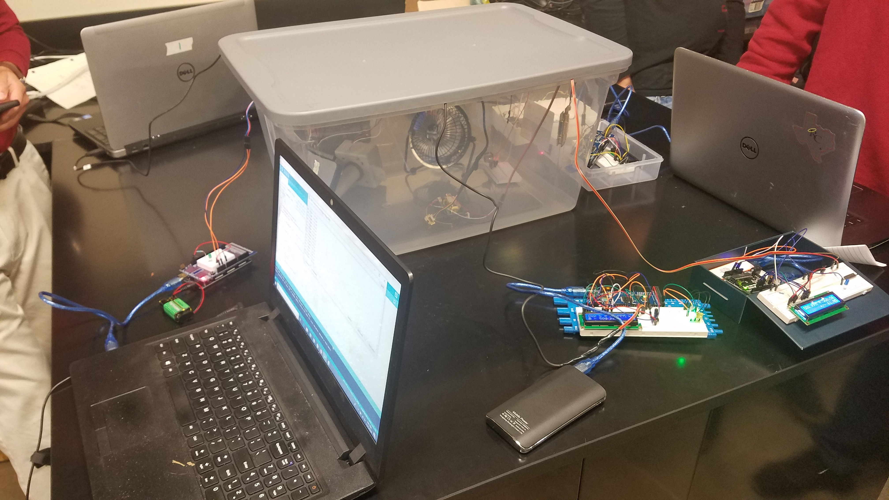

C02 Sensor for Demand Control Ventilation - Team Lead
Click on the image below to view a brief initial demonstration for this project:

The CO2 sensor was programmed to detect varying levels of CO2 in a space, then open or close a damper, as needed, in order to allow fresh air in to keep CO2 levels within optimal safe ranges. The idea of Demand Control Ventilation (DCV) is that it is more efficient to recycle already conditioned air rather than condition outside air for use in an interior space. However, as persons occupy a space, CO2 levels will rise. This causes the air to first become uncomfortable to breathe, and if left unchecked, could result in injury or death. So, CO2 sensors must be used to monitor the levels of carbon dioxide in the space so that levels stay within a safe range while the room is occupied, but can retain as much efficiency as possible when occupancy is low or zero.

The sensor was wired and programmed using Arduino products as well as the Arduino IDE:
A Logic Flow Chart was created for the program and is illustrated below, showing the ranges of CO2 Levels and the appropriate algorithym for the system:

The setup for this project was to compare our sensor with a professional grade CO2 sensor, and verify the code used by interfacing the sensor with a motorized damper and showing the appropriate rotation of the damper in various environments:
The report for this project can be seen here: VIEW REPORT .
For a more detailed explanation of this project, please check out the PowerPoint slides here: VIEW SLIDES .
This project taught me not only how to code in Arduino IDE, but also gave me more experience with wiring devices and creating my own electronics. The research that went into this project is invaluable and helped form the foundation for my coding knowledge.